Atradius
Atradius is a global provider of credit insurance, surety, and debt collection services, helping businesses manage trade risk and grow with confidence. With a presence in over 50 countries, Atradius supports companies of all sizes with tools to protect receivables and make informed credit decisions in an ever-changing market.
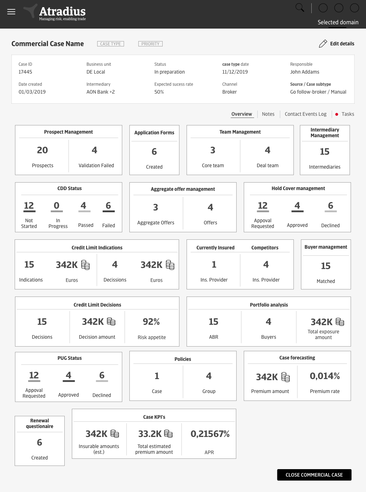
Project overview
Atradius embarked on a strategic transformation initiative to modernize its legacy credit insurance platform — internally known as the "Symphony Application" — which had become outdated, complex, and difficult to maintain. The redesign, part of the broader Arcade program, aimed to deliver a next-generation digital solution that would enhance user experience, streamline business processes, and support long-term technological scalability.
The project applied the Coexistence Principle: legacy systems continued running in parallel with the new platform through the transition, minimizing disruption while paving the way for incremental improvement.
Problem statement
Atradius was operating on an outdated legacy system — Symphony — that was difficult to maintain, unintuitive for users, and unable to scale with the evolving needs of the business. Outdated workflows led to inefficient processes, user frustration, and high support overhead. The legacy infrastructure also limited the company's ability to innovate and respond quickly to market demands.
There was a pressing need to:
- Simplify and automate complex workflows.
- Improve usability and user guidance.
- Transition to a more modern, scalable IT architecture.
- Strengthen customer value through improved service accessibility and experience.
Design process
Discovery
To ensure the redesigned platform aligned with the real needs of its end users, we developed key user personas grounded in stakeholder interviews — including Mike, an Account Manager, and Daphne, a Customer Credit Manager. These personas helped the team empathize with users' daily challenges, prioritize features, and design workflows that genuinely supported their goals, rather than just digitizing the old ones.
After synthesizing insights from stakeholder interviews, user observations, and workflow analysis, we moved into the definition phase — translating findings into a strategic foundation for the rest of the design process.
User Journey Mapping & Opportunity Identification
We created detailed user journey maps for the core personas — Mike and Daphne — visualizing the end-to-end experience across tasks like policy creation, credit risk analysis, and customer communication. Mapping each touchpoint let us:
- Pinpoint moments of friction, such as redundant data entry or unclear navigation.
- Identify delays caused by manual processes or system dependencies.
- Recognize emotional pain points, like frustration from slow data retrieval or limited visibility into account status.
That mapping surfaced clear opportunities for simplification:
- Streamlining multi-step workflows into guided, linear processes.
- Reducing toggling between multiple legacy interfaces.
- Consolidating key information on dashboards and summary screens.
- Automating repetitive tasks such as data population and risk validation.
These opportunities directly informed the early wireframes.
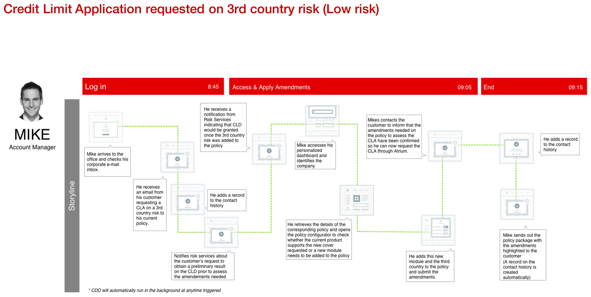
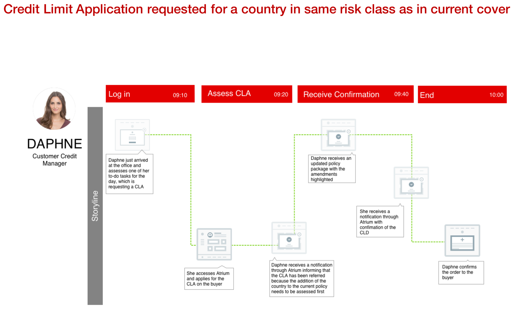
Two of the ~15 storyline-format journeys mapped across personas — including Martina (Finance Director) and Damian (Broker) on the customer side — each broken into timed phases (Log in → Assess → Negotiate → End) to expose where minutes, and patience, were being lost.
Expert Evaluation
Alongside the generative research, a heuristic pass on the existing Symphony application surfaced several structural issues. The application is data-heavy, but screen space wasn't being used effectively due to a low target resolution. While the interface aimed to align with company branding, the style guide had real discrepancies — red tertiary buttons, for instance, could easily be misread as error states. Visual hierarchy was thin overall, leaving the interface feeling flat.
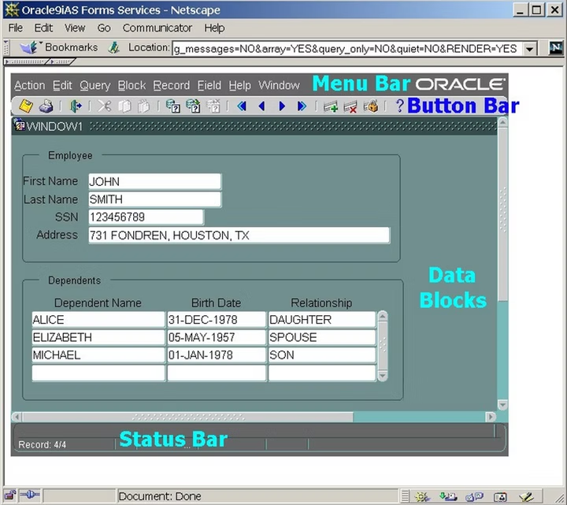
The legacy Symphony system — built on Oracle Forms — that the redesign is replacing screen by screen.
Two takeaways guided the redesign directly:
- Navigation needed a clear structure so users could find their way around without guesswork.
- Data on screen needed to be actionable, not just present — information users could immediately act on, not just read.
Defining Success Metrics
Establishing meaningful success metrics was critical to ensuring the redesigned platform delivered measurable value, not just a fresh coat of paint. We approached it in three steps.
1. Stakeholder Alignment Workshops
We ran collaborative workshops with cross-functional stakeholders — Product Managers, Business Analysts, UX Researchers, IT Leads, and Customer Support Managers — exploring business priorities for the Arcade platform, known pain points from internal and external users, operational KPIs already in use, and opportunities to introduce UX-specific measures like satisfaction and efficiency. This aligned the team on what "success" meant from both a strategic and a practical, day-to-day perspective.
2. Mapping User Goals to Business Objectives
We used persona insights — Mike's need for faster client servicing, Daphne's need for better data access — to map individual user goals to high-level business outcomes:
3. Identifying Observable Indicators
Once goals were aligned, we worked with data and IT teams to identify observable, trackable indicators already available in the system:
- Time-on-task, measured via system logs.
- Support ticket volume, tracked pre- and post-launch.
- Adoption rate, measured via login frequency and feature usage.
How might we?
Moving into the design and validation phase, the focus shifted to migrating legacy functionality while addressing pain points across roles — admins, brokers, underwriters — across critical workflows like offer creation through invoicing. We framed key design opportunities as "How Might We" questions to keep the team anchored on outcomes, not just features.
"Better customer experience, better control and transparency of data — the system should deliver accurate output in multiple formats depending on customer preference."
Continuous Feedback Loop
To keep these questions honest, the process stayed iterative throughout:
- Regular review sessions with subject matter experts (SMEs) to evaluate user stories.
- Design hypotheses validated through early and frequent low- and high-fidelity prototypes.
- Customer demo sessions to test baseline designs and gather actionable feedback.
- Real-time input used to refine user flows, sharpen clarity, and stay aligned with business needs.
Focus Areas
Research consistently surfaced the same three needs, in different words, across personas and workshops. Three pillars organized the design work going forward:
The same principle extended to actionability and notifications: surfacing what a user should do next when a dashboard sat empty, and flagging meaningful account activity — a policy update, a new offer requiring review — so nothing important got missed.
Wireframes & Prototyping
Experience 1 — Compare Policies & Offers
The "Compare Policies & Offers (Complex)" feature streamlines decision-making in MSA and renewal processes by letting users compare multiple policies, multiple offers, or a single policy against related offers. It supports advanced filtering and customizable comparisons across modules, variables, document groups, and bank accounts, with both on-screen and Excel export options. Users choose a source offer, pick target offers to compare against, and toggle between "View differences," "View similarities," or "View all" to cut through the noise. The tool only surfaces currently effective or non-end-dated records, keeping comparisons accurate for complex commercial case evaluations.
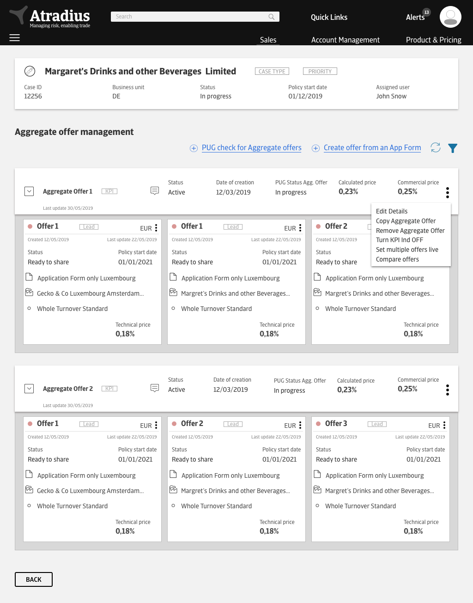
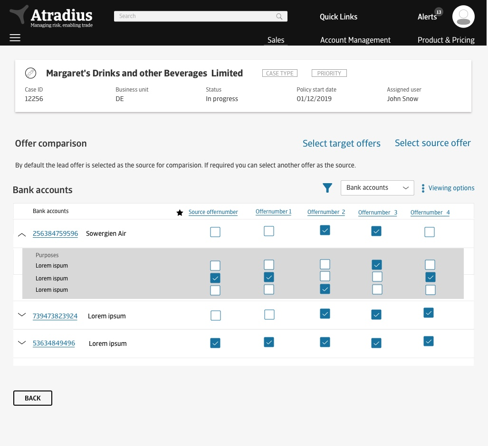
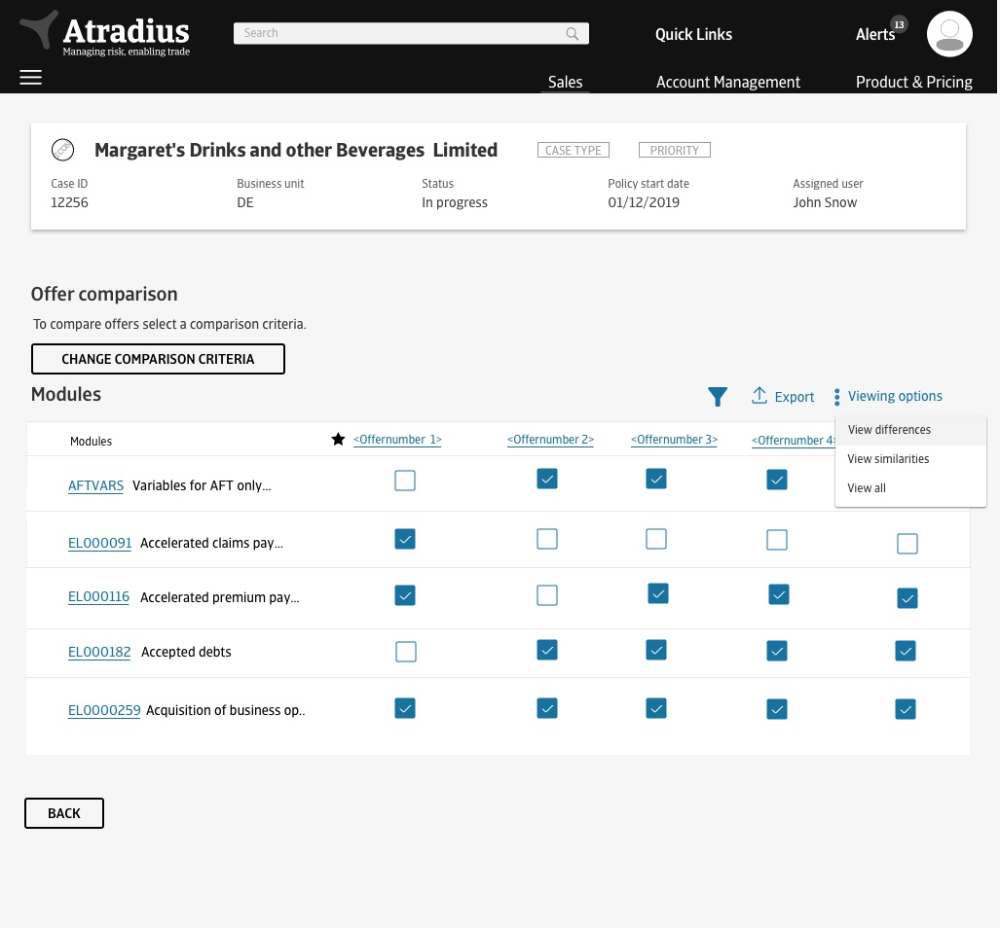
Experience 2 — Performance & Portfolio Dashboards
As part of a data-driven reporting solution, I designed a set of dashboards giving account managers a real-time overview of policy performance and operational activity. At the policy level, this means turnover, premium and APR estimates sitting alongside credit limit indications, credit limit applications, claims & collections, and cash transaction balances — all on one screen, replacing what used to be a multi-system lookup. At the commercial case level, a broader overview rolls up prospect management, CDD status, aggregate offers, hold cover, credit limit decisions, and portfolio analysis into a single set of KPI tiles (see the hero screen above).
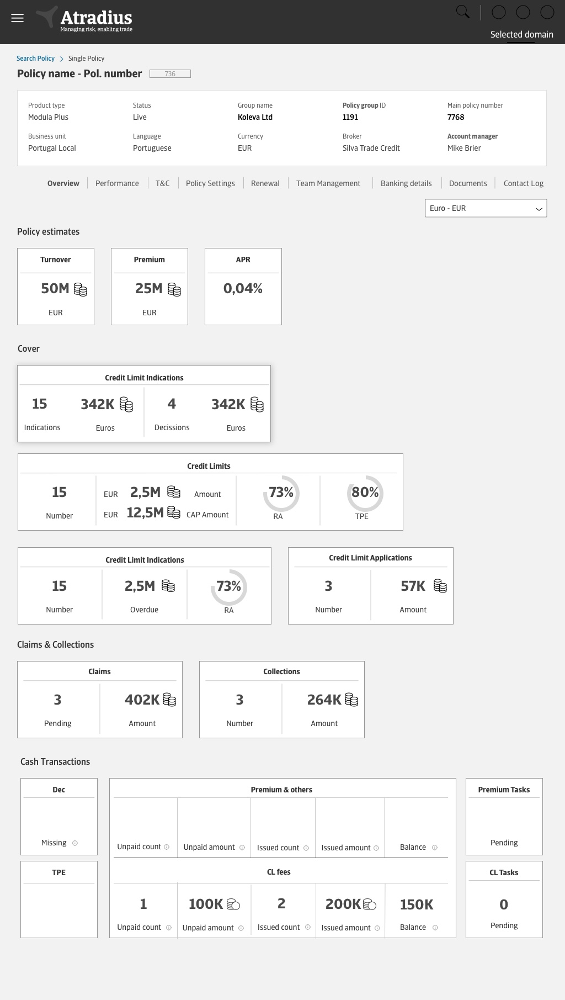
Policy-level performance overview — one screen replacing several legacy lookups.
Once screens were designed and user journeys updated, I built detailed UI flows and interactive prototypes so stakeholders could clearly understand each feature — including multiple scenarios and contextual explanations. These assets were central to a smooth handoff, giving development, services, and testing teams comprehensive documentation to work from.
Experience 3 — Declarations & Invoicing
Declarations sit at the center of the policy lifecycle — customers report turnover by country, buyer and trade sector, and the system calculates premium against it. The redesigned declaration table lets users configure which columns matter to them (buyer organisation, trade sector, region), expand any row for special or customer-reference notes, and switch into an "Edit details" mode for bulk changes — replacing a rigid, one-size-fits-all legacy grid. A dedicated Cash Transactions tab rolls declarations, premium & other fees, and CL fees into running balances, so an account manager can see what's unpaid, issued, or pending without leaving the policy.


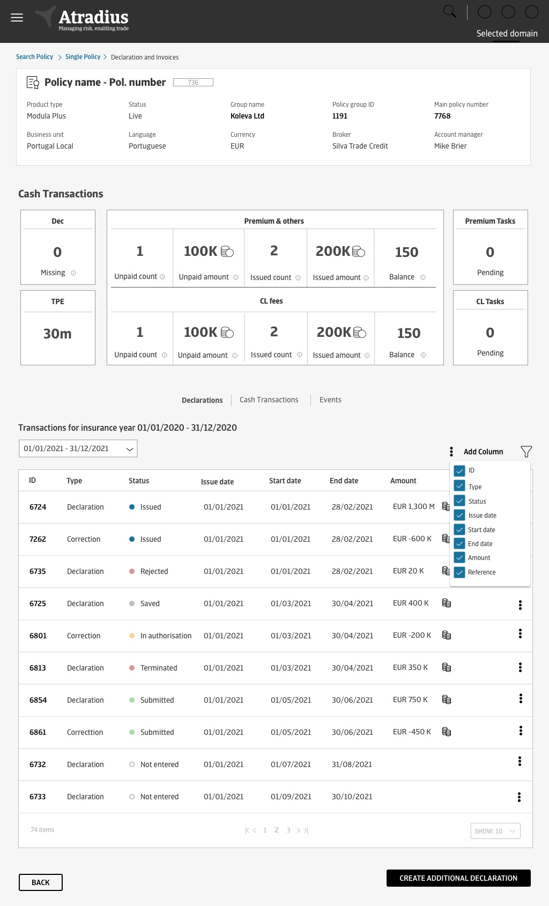
Experience 4 — Manual Events & Premium Adjustment
Not every charge fits the standard declaration flow — bonuses, surcharges, no-claim adjustments and CL fees often need a manual event: a bulk list of charge lines, each with its own line type, region, unit price and tax-suppression setting. Because tax calculation across dozens of lines can take real time, the flow makes that wait visible rather than hiding it: past a threshold, users choose between waiting for a live preview or submitting outright, and get a mobile alert the moment the tax summary is ready to review — commission impact included.
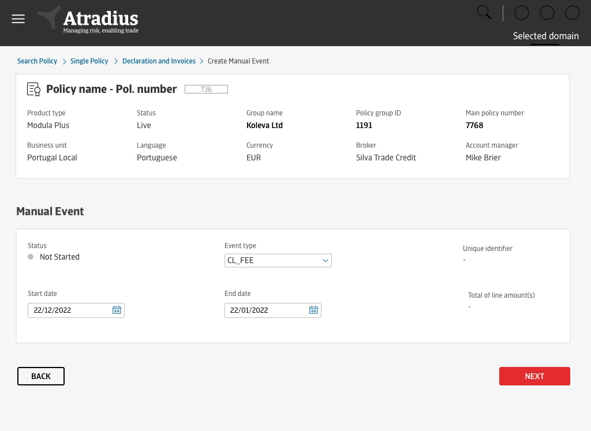
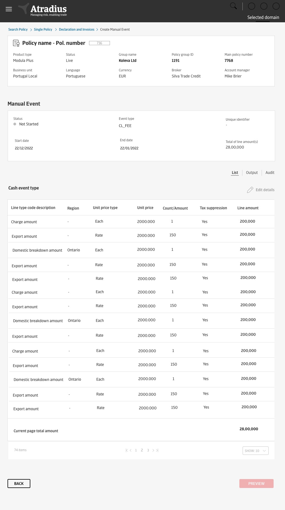
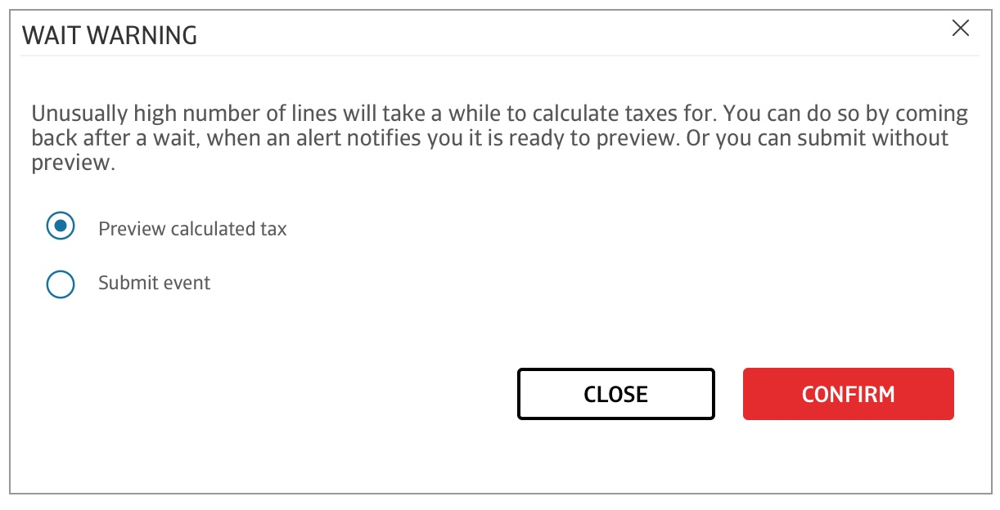
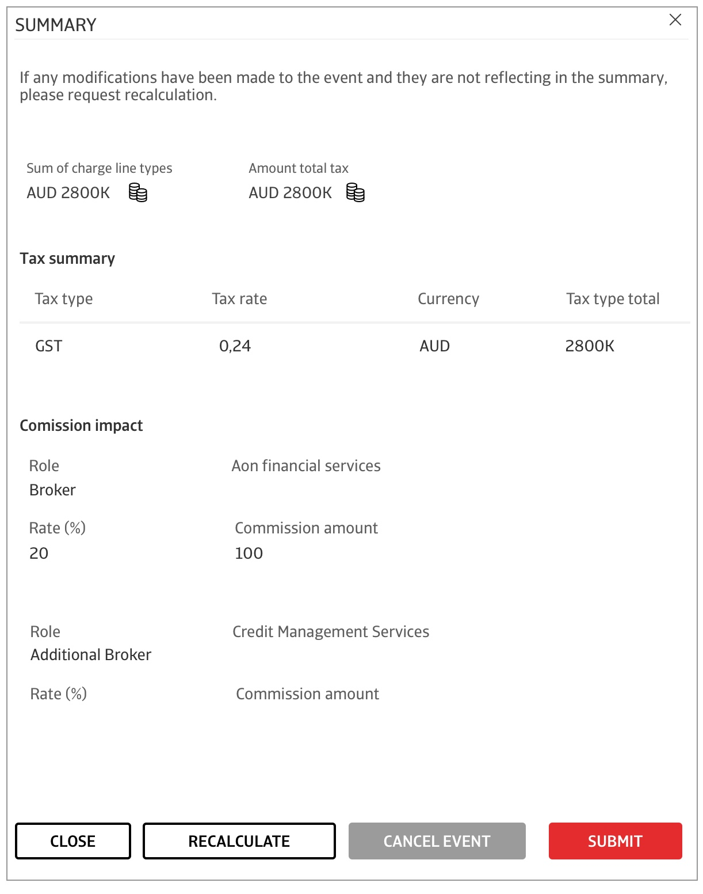
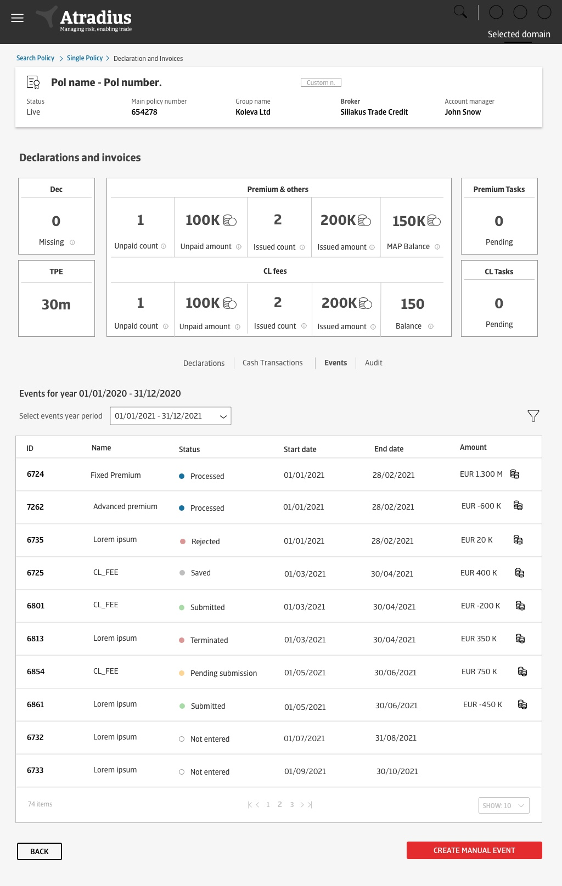
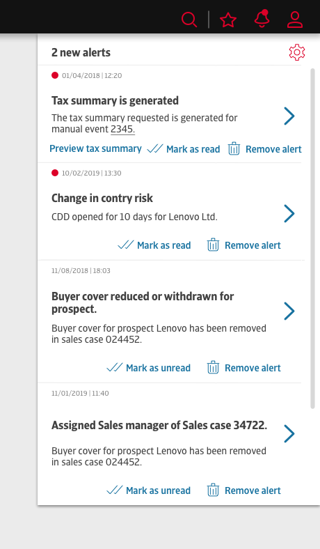
Usability Testing
We ran multiple demo sessions with subject matter experts (SMEs) and product owners to showcase the features we'd designed. For these, I built interactive prototypes that let users experience key flows, behaviors, and system interactions firsthand — a hands-on approach that helped stakeholders understand design intent, not just look at static screens.
Alongside the demos, I created a structured feedback survey so users could share ratings, suggestions, and overall impressions across eight dimensions — clarity of the flow, efficiency gains, screen readability, availability of essential information, functional adequacy, regulatory fit, and expected impact on response time and service quality. Combining real-time interaction with targeted feedback gave a clear read on how well the designs matched user needs and expectations, and directly informed the next round of iteration.
The Premium Adjustment demo is a good example of the loop in practice. Country reps flagged specific, actionable gaps: a missing "Reject" option alongside submit, a "Submit" button whose label didn't match its actual behaviour (renamed to "Preview" as a result), commission impact missing from the preview screen, and a request that claim ratios always display to two decimal places to avoid rounding disputes. Some feedback surfaced process questions that reached beyond the interface itself — like whether bonus calculations, currently handled manually by account managers in France, should keep routing through that manual review step even after automation. Capturing that kind of feedback, not just star ratings, is what made the loop useful.
Next steps
As the project continues, the focus is on optimizing the design process itself to deliver a more cohesive, user-centric product:
- Style Guide Enhancements — proposing improvements to consistency, accessibility, and scalability. Since the guide has been in use since the standard release, this included a thorough impact analysis to ensure changes land without disrupting established workflows.
- Expanded Usability Testing — extending testing to cover additional features, surfacing further pain points and supporting continued iterative improvement.
- Complexity Analysis for Workflow Optimization — applying the same complexity-scoring method used on PowerVC to identify friction and over-engineering in the Atradius journey, guiding where simplification will have the most impact.